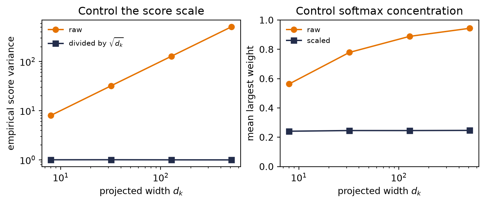
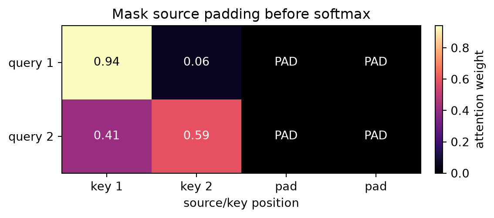
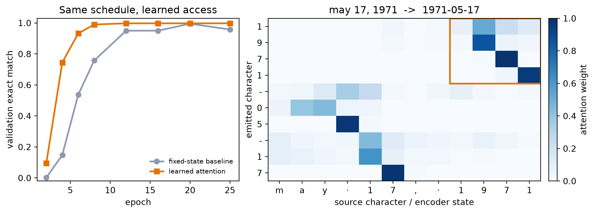

Chapter 12 built the whole attention operator except for one piece. It had a query, a bank of keys and values, a score for every query–key pair, softmax weights, and a weighted read. But Euclidean distance decided what counted as similar. The task could tune the bandwidth; it could not invent a better notion of relevance.
Chapter 11 left us a more pointed promise: hard address, learned content. An embedding can learn what lives at row 17, but fetching row 17 is still a rigid indexing operation. Chapter 2 told us how to soften that hard choice. Replace the single address with a differentiable distribution over addresses, let the loss send blame through every score, and learn which memory locations deserve weight. A differentiable lookup, Chapter 2 promised, is precisely attention. The promise comes due here.
The result is visible in the date task before we name all its parts. For the fixed validation source
may 17, 1971 -> 1971-05-17
the trained decoder emits the year first even though those four characters sit at the end of the source. Across the fixed 400-example validation audit, its first four attention rows place 97.5% of their mass on the four contextual encoder states indexed by the source-year characters. When the example above emits its second character, 9, the largest weight is 0.856 on the state indexed by the source’s 9; when it emits 7, the largest weight is 0.985 on the state indexed by the 7 in the year region. Those weights were not supervised as alignments. The date loss taught the model where useful information lived.
At decoder step \(t\), use the previous decoder hidden state \(\vect{s}_{t-1}\in\mathbb{R}^{d_d}\) as the query. A learned compatibility function \(a_\theta\) produces one score per source position:
This is Chapter 12’s fixed matrix \(\matr{A}\matr{V}\) with a learned score. It is also Chapter 2’s scores \(\rightarrow\) weights machine in exactly the form that chapter advertised. A hard source-position choice would use argmax and one-hot indexing. The soft weights move continuously when the scores move, so backpropagation can tell the scorer how each valid address affected the loss. We have softened the hard.
Because the query comes from the decoder and the memory comes from the encoder, this is cross-attention. It bridges two sequences. The model still initializes the decoder from the encoder’s final state, but that fixed bridge is no longer the only path from source to output: every decoder step receives its own context \(\vect{c}_t\). Chapters 10 and 11 called the old handoff a finite-state bottleneck. Chapter 12 kept the memory bank; this chapter completes that relay by learning its access rule.
Chapter 8 made one other promise. A CNN buys global sight by stacking local operations until its receptive field spans the input. One cross-attention read can score every encoder position in a single layer. It buys global access directly, paying for all query–key comparisons and, for now, for the RNNs that created those states sequentially.
13.2 Additive attention: learn the comparison itself
The most literal answer to “make similarity learnable” is a small neural network. Choose an alignment width \(d_a\). For one decoder query and one encoder state,
The two projections put objects of different native sizes into one alignment space. The tanh creates match features, and \(\vect{v}_a\) selects which of those features matter for the scalar score. The same parameters are reused for every decoder step \(t\) and source position \(i\). Remember Chapter 7’s sliding filter: one learned rule, applied everywhere. Attention shares a compatibility rule across pairs.
For a batch, let \(\matr{S}_{t-1}\in\mathbb{R}^{B\times1\times d_d}\) collect the queries. The row-major shapes make the broadcasting explicit:
Their sum produces \((B,n,d_a)\) match features. Reduction by \(\vect{v}_a\) produces \((B,n)\) scores, softmax runs over the \(n\) source positions, and the weighted read returns a \((B,d_e)\) context. That last axis choice is not bookkeeping: softmax over the wrong dimension answers the wrong question.
The lecture’s scene freezes one simple parameter snapshot so we can watch the arithmetic. With identity projections and an all-ones selector, three source states receive scores \((1.015,1.562,1.124)\) and therefore weights \((0.260,0.450,0.290)\):
Figure: the additive scorer and a three-key numerical snapshot
Figure 13.1: Additive attention learns a compatibility function. Query and key enter separate projections, their alignment features interact through tanh, and a learned selector reduces those features to one score. The right panel freezes one parameter setting to show the resulting scores-to-weights calculation; it is arithmetic, not a trained result.
Note“Learned kernel” is an analogy
Exponentiating a learned score and normalizing it reproduces the Nadaraya–Watson algebra. It does not make every attention score a classical kernel. Separate query and key projections can make \(a_\theta(q,k)\) asymmetric and not positive semidefinite. What survives exactly is the operational pattern: compare \(\rightarrow\) normalize \(\rightarrow\) mix.
13.3 Scaled dot product: learn the spaces, simplify the score
For \(m\) decoder queries, additive attention is vectorized, but it forms a \((B,m,n,d_a)\) intermediate, applies an elementwise tanh, and reduces it. Dense matrix multiplication has a simpler computational path. Chapter 1 introduced the dot product as a similarity score against a template. Here the key is the template, and training learns the space in which that comparison is useful.
The lecture first walks one four-dimensional query past three keys. Its raw dot products are \((1.10,-0.60,0.15)\). Since \(\sqrt{4}=2\), scaling gives \((0.55,-0.30,0.075)\), and softmax gives \((0.488,0.209,0.303)\):
Code: one query through dot product, scaling, and softmax
Now let raw decoder features \(\matr{D}\in\mathbb{R}^{B\times m\times d_d}\) and encoder memory \(\matr{H}\in\mathbb{R}^{B\times n\times d_e}\) enter learned projections:
Only the projected query and key widths must agree. The raw encoder and decoder widths need not. Let \(\matr{M}\in\mathbb{R}^{B\times1\times n}\) broadcast across queries. Scaled dot-product attention is
where \(\matr{K}^{\top}\) transposes the last two axes within each batch. Softmax runs over the last, key-position axis. The hot path is two dense products: \(\matr{Q}\matr{K}^{\top}\) and \(\matr{A}\matr{V}\). Additive attention remains useful and accelerator-compatible; scaled dot product simply maps more directly to the matrix operations modern numerical libraries optimize heavily. Appendix C turns that intuition into a conditional performance model—dense products can earn high arithmetic intensity through reuse, but shapes, data movement, implementation, and hardware decide the actual regime (Appendix C).
Luong and colleagues compared unscaled dot, general, and concat scores in recurrent translation. Vaswani and colleagues later introduced the \(1/\sqrt{d_k}\) scaling in the Transformer formulation. The mechanisms belong in one conceptual family, not a single inevitable historical derivation.
The dot product is not magically semantic. \(\matr{W}_Q\) and \(\matr{W}_K\) learn which features to compare, including their magnitudes, while the surrounding RNN has already built nonlinear sequence features. In Chapter 14, a feed-forward network will help provide that nonlinear feature transformation after recurrence disappears.
Why divide by \(\sqrt{d_k}\)?
Suppose, for the moment, that projected coordinates \(q_\ell\) and \(k_\ell\) are independent, mean zero, and variance one, and that their products are independent across coordinates. Then
The score’s standard deviation grows as \(\sqrt{d_k}\). Dividing by that quantity returns the idealized variance to one. This is a variance-control rationale, not a promise that trained projections remain independent or unit variance.
Let us test both the variance and what softmax sees. For each width, draw 20,000 queries and 16 independent keys per query:
Code: audit score variance and softmax concentration versus width
d_k raw var scaled var raw max-w scaled max-w
8 8.023 1.003 0.564 0.241
32 32.142 1.004 0.779 0.246
128 127.985 1.000 0.889 0.246
512 510.347 0.997 0.944 0.247

Figure 13.2: The scaling argument under its stated random-feature assumptions. Left: raw dot-product variance grows with width, while division by the square root of the width keeps it near one. Right: without scaling, a 16-key softmax becomes nearly one-hot as width grows; scaling keeps its mean largest weight near 0.25. These are seeded synthetic draws about concentration, not a claim about every trained layer’s gradients.
Raw variance rises from \(8.02\) to \(510.35\) as \(d_k\) grows from 8 to 512. Scaled variance stays between \(0.997\) and \(1.004\). Over the same range, the average largest unscaled softmax weight climbs from \(0.564\) to \(0.944\); the scaled value stays near \(0.24\). This is Chapter 2’s temperature dial returning with a dimension-dependent setting. Scaling corrects the dimension-induced spread; it does not normalize the vectors.
13.4 Mask before softmax, and mask the right thing
Chapter 11 showed that padding can poison an encoder’s final state. Attention creates a third place to enforce sequence lengths: the score matrix. A padded key must not receive a merely mediocre score. It must be excluded before normalization. Setting its score to zero is wrong because \(\exp(0)=1\) still earns weight.
Here is an independently written scaled-dot operator. It accepts already projected queries, keys, and values, then audits a batch whose second example has two padded keys:
Code: scaled dot-product attention with a source-padding mask
def scaled_dot_attention( queries: torch.Tensor, keys: torch.Tensor, values: torch.Tensor, key_is_valid: torch.Tensor,) ->tuple[torch.Tensor, torch.Tensor]:"""Attend with Q:(B,m,d_k), K:(B,n,d_k), V:(B,n,d_v)."""if queries.ndim !=3or keys.ndim !=3or values.ndim !=3:raiseValueError("Q, K, and V must be three-dimensional")if queries.shape[-1] != keys.shape[-1]:raiseValueError("projected Q and K widths must match")if keys.shape[:2] != values.shape[:2]:raiseValueError("K and V must have the same batch and key axes")if key_is_valid.shape != keys.shape[:2] ornot key_is_valid.any(dim=1).all():raiseValueError("every example needs at least one valid key") scores = queries @ keys.transpose(-2, -1) / math.sqrt(keys.shape[-1]) scores = scores.masked_fill(~key_is_valid[:, None, :], -torch.inf) weights = torch.softmax(scores, dim=-1)return weights @ values, weightsmask_gen = torch.Generator().manual_seed(6050133)Q_demo = torch.randn(2, 2, 4, generator=mask_gen)K_demo = torch.randn(2, 4, 4, generator=mask_gen)V_demo = torch.randn(2, 4, 3, generator=mask_gen)valid_demo = torch.tensor([[True, True, True, True], [True, True, False, False]])context_demo, mask_weights = scaled_dot_attention( Q_demo, K_demo, V_demo, valid_demo)assert torch.allclose( mask_weights.sum(-1), torch.ones_like(mask_weights[..., 0]))assert torch.count_nonzero(mask_weights[1, :, 2:]) ==0print("Q", tuple(Q_demo.shape), "K", tuple(K_demo.shape),"V", tuple(V_demo.shape), "A", tuple(mask_weights.shape),"AV", tuple(context_demo.shape))print("maximum row-sum error:",f"{(mask_weights.sum(-1) -1).abs().max().item():.2e}")print("maximum padded weight:",f"{mask_weights[1, :, 2:].max().item():.1f}")fig, ax = plt.subplots(figsize=(5.8, 2.5), constrained_layout=True)shown = mask_weights[1].detach().numpy()image = ax.imshow(shown, vmin=0, vmax=shown.max(), cmap="magma", aspect="auto")for row inrange(shown.shape[0]):for col inrange(shown.shape[1]): label ="PAD"if col >=2elsef"{shown[row, col]:.2f}" ax.text(col, row, label, ha="center", va="center", color="white"if shown[row, col] <0.65* shown.max() else"black")ax.set(xticks=range(4), xticklabels=["key 1", "key 2", "pad", "pad"], yticks=range(2), yticklabels=["query 1", "query 2"], xlabel="source/key position", title="Mask source padding before softmax")fig.colorbar(image, ax=ax, label="attention weight", fraction=0.05, pad=0.04)plt.show()
Q (2, 2, 4) K (2, 4, 4) V (2, 4, 3) A (2, 2, 4) AV (2, 2, 3)
maximum row-sum error: 0.00e+00
maximum padded weight: 0.0

Figure 13.3: A source-padding mask acts before softmax. The second example has only two real keys; its last two score cells are excluded and receive exactly zero weight. Cross-attention may read every real source position, so no causal triangle belongs here.
WarningThree masks are not one mask
The target loss mask says which output positions should not be graded; it remains good general hygiene but is dormant for this fixed-length ISO target. The cross-attention padding mask says which source positions do not exist. A causal mask says which future target positions may not be seen. Our recurrent decoder generates one step at a time and the entire source is already available, so the source-padding attention mask is the one exercised here. Chapter 14 will use causal masking inside decoder self-attention.
An all-masked row has no sensible distribution and would make softmax of all \(-\infty\) undefined. Good hygiene is to assert that every example has at least one real key, as the function does above.
13.5 Return to Chapter 11’s date task
The abstraction has earned a real rematch. We will change one architectural idea and keep the experimental contract fixed:
the same date generator and duplicate-source rejection;
the same 8,000/500/500 train/validation/test split;
the same embedding width 32 and LSTM hidden width 128;
the same Adam learning rate \(10^{-3}\), batch size 128, 25 epochs, teacher forcing, gradient clip 5, and seed 6050;
the same first 400 unambiguous validation sources for every learning curve;
one final scalar audit on the same 437 unambiguous test sources.
The generator and split below are deliberately byte-for-byte copies of Chapter 11. Changing them would end the running benchmark:
Code: reconstruct Chapter 11’s sealed date benchmark
import random, torchimport torch.nn as nnimport torch.nn.functional as Fimport matplotlib.pyplot as pltMONTHS = ["january", "february", "march", "april", "may", "june", "july","august", "september", "october", "november", "december"]DAYS =dict(zip(MONTHS, [31, 28, 31, 30, 31, 30, 31, 31, 30, 31, 30, 31]))def make_date(rng: random.Random) ->tuple[str, str]: mo = rng.randrange(12) d = rng.randrange(1, DAYS[MONTHS[mo]] +1) y = rng.randrange(1950, 2026) iso =f"{y:04d}-{mo+1:02d}-{d:02d}" style = rng.random()if style <0.35: src =f"{MONTHS[mo]}{d}, {y}"elif style <0.6: src =f"{d}{MONTHS[mo]}{y}"elif rng.random() <0.7: src =f"{mo+1:02d}/{d:02d}/{y}"# US convention: mm/ddelse: src =f"{d:02d}/{mo+1:02d}/{y}"# EU convention: dd/mmreturn src, isorng = random.Random(6050)pairs, seen_sources = [], set()whilelen(pairs) <9000: pair = make_date(rng)if pair[0] notin seen_sources: seen_sources.add(pair[0]) pairs.append(pair)train_pairs = pairs[:8000]valid_pairs = pairs[8000:8500]test_pairs = pairs[8500:]print(*pairs[:4], sep="\n")train_sources = {s for s, _ in train_pairs}valid_sources = {s for s, _ in valid_pairs}test_sources = {s for s, _ in test_pairs}print("exact-source overlaps: "f"train/valid {len(train_sources & valid_sources)}, "f"train/test {len(train_sources & test_sources)}, "f"valid/test {len(valid_sources & test_sources)}")PAD, BOS, EOS =0, 1, 2# special tokens firstSRC =sorted(set("".join(s for s, _ in pairs)))TGT =sorted(set("".join(t for _, t in pairs)))src_stoi = {c: i +3for i, c inenumerate(SRC)}tgt_stoi = {c: i +3for i, c inenumerate(TGT)}tgt_itos = {i: c for c, i in tgt_stoi.items()}V_src, V_tgt =len(SRC) +3, len(TGT) +3print(f"source vocab {V_src}, target vocab {V_tgt}")
Numeric dates can be ambiguous, so we retain the same unambiguous subsets as Chapter 11. Design decisions and the heatmap use validation only. The test set remains a single number at the end.
Put the learned read inside the recurrent decoder
The packed encoder now returns two things: its final \((\vect{h},\vect{c})\) state, which still initializes the decoder, and a padded memory tensor containing every real encoder output plus a validity mask that excludes the padded slots. At step \(t\):
use decoder hidden state \(\vect{s}_{t-1}\) as the query;
compute additive scores over the encoder memory and mask padding;
form the context \(\vect{c}_t\);
concatenate \(\vect{c}_t\) with the embedding of the previous target token;
advance one decoder LSTM step, then predict from \([\vect{s}_t;\vect{c}_t]\).
This timing follows the Bahdanau-style formulation. Luong-style variants often score with the current decoder state instead; both are valid, but silently mixing their indices makes an implementation impossible to audit.
For this date model, the shape ledger is concrete:
Notice what changed relative to Chapter 11. The embeddings and encoder width are untouched. Values are the contextual encoder states themselves; learned projections create match features for keys and queries. The decoder must now advance one target step at a time because its next context depends on its previous state. Teacher forcing still supplies the true previous token, but it no longer permits one fused decoder call.
The matched-schedule rematch
The full Chapter 11 validation curve below is frozen from a byte-identical re-execution of that chapter’s published baseline. We do not retrain it here. We train the attentive model once, inspect only validation alignments, and then request one final test scalar:
Code: matched-schedule date rematch and sealed test audit
Figure: convergence rematch and learned date alignment
from matplotlib.patches import Rectanglefig, axes = plt.subplots(1, 2, figsize=(9.8, 3.45), gridspec_kw={"width_ratios": [1.0, 1.35]}, constrained_layout=True,)axes[0].plot( checkpoints, [baseline_curve[c] for c in checkpoints],"o-", color="#8D99AE", lw=2, label="fixed-state baseline",)axes[0].plot( checkpoints, [attention_curve[c] for c in checkpoints],"s-", color="#E57200", lw=2, label="learned attention",)axes[0].set( xlabel="epoch", ylabel="validation exact match", ylim=(-0.02, 1.03), title="Same schedule, learned access",)axes[0].legend(frameon=False, fontsize=8)heatmap = alignment_example[:len(generated_example)].numpy()image = axes[1].imshow( heatmap, cmap="Blues", aspect="auto", vmin=0, vmax=1,)source_labels = ["·"if char ==" "else char for char in source_example]axes[1].set_xticks(range(len(source_example)), source_labels)axes[1].set_yticks(range(len(generated_example)), list(generated_example))axes[1].set( xlabel="source character / encoder state", ylabel="emitted character", title=f"{source_example} -> {generated_example}",)axes[1].add_patch(Rectangle( (len(source_example) -4.5, -0.5), 4, 4, fill=False, edgecolor="#E57200", linewidth=2,))fig.colorbar( image, ax=axes[1], fraction=0.047, pad=0.03, label="attention weight",)plt.show()

Figure 13.4: Left: exact-sequence accuracy on Chapter 11’s fixed 400-source validation subset. Both models use the same data, embedding and recurrent hidden widths, optimizer, top-level seed, and epoch schedule; attention adds parameters and a stepwise decoder, so this is not a parameter- or compute-matched ablation. Right: the predeclared first validation example. Rows are emitted ISO characters, columns are contextual encoder states indexed by source character, and the orange box marks the source year. The first four rows concentrate there.
At epoch 6, the fixed-state baseline is at \(53.8\%\) and the attentive model is at \(93.25\%\), a 39.5-point lead. At epoch 12 the comparison is \(95.0\%\) versus \(99.75\%\). The one final test audit is \(93.1\%\) versus \(100.0\%\) on 437 unambiguous sources.
WarningFaster convergence is not a one-variable proof
We matched examples, embedding and recurrent hidden widths, optimizer, top-level seed, number of updates, and epochs. We did not match parameter count, computation, or minibatch order: constructing models with different parameter counts consumes different random draws before their first permutation. The attentive model has 269,550 parameters versus 169,326, an increase of 59.2%, and its input-feeding decoder uses a Python step loop where Chapter 11’s teacher-forced baseline uses one fused target-sequence call. This one seeded synthetic rematch shows that the attention-equipped model reaches higher accuracy in fewer epochs and optimizer updates, not in less wall-clock time. It does not isolate bottleneck removal as the only possible cause.
The heatmap answers a narrower question. On the fixed validation example, the year must travel from the last four source positions to the first four outputs. The orange block catches that movement, and across all 400 fixed validation examples, 97.5% of those four rows’ mass lands on states indexed by the source-year region. The top-weighted state is indexed inside that region 99.7% of the time.
Columns are indexed by source characters, but their values are encoder states. Each state summarizes a recurrent prefix, so a delimiter can legitimately carry information about a field that just ended. Attention weights are internal allocation weights, not calibrated confidence and not a causal explanation of the model. The quantitative audit and the visual alignment complement each other; neither substitutes for the other.
13.6 One learned view, for now
One attention head learns one set of query, key, and value projections. Multi-head attention repeats that operator with several projection sets, concatenates the reads, and learns an output projection. It works for cross-attention as well as self-attention, and different heads can learn different relationships without any guarantee that they will. We keep one head in the date rematch so its alignment stays easy to inspect. Chapter 14 derives the multi-head shapes and implements the full operator in its self-attention setting.
13.7 The bottleneck that remains
Cross-attention has repaired the fixed handoff. A decoder output can read any encoder state through one learned allocation. Yet both surrounding LSTMs remain recurrent: \(\vect{h}_i\) waits for \(\vect{h}_{i-1}\), and \(\vect{s}_t\) waits for \(\vect{s}_{t-1}\). Within either sequence, training cannot create all recurrent states at once.
The Q/K/V operator itself does not care where its three inputs came from. What if every position in one sequence supplied queries, keys, and values to every other position? Using that operator in place of the RNN can remove recurrence within each layer, but it also removes the RNN’s built-in sense of order. Chapter 8 warned that throwing away where incurs a debt; Chapter 14 pays it back with positional information. Chapter 11’s masking warning also returns there: a causal mask will decide which future positions an autoregressive model may not see.
13.8 Okay, so —
Attention softens the address. Chapter 11 learned embedding content while keeping lookup indices hard. Chapter 2’s differentiable-lookup promise is now paid: learned scores become a distribution over memory locations.
Additive attention learns the compatibility function. Query and key enter a shared alignment space, tanh creates match features, and one selector produces each score. The same scorer is reused across all decoder/source pairs.
Scaled dot product learns comparison spaces. Projected \(\matr{Q}\matr{K}^{\top}/\sqrt{d_k}\) maps directly to dense matrix products. Under the idealized independent unit-variance model, scaling holds score variance near one instead of letting it grow with \(d_k\).
Masking is part of the operator. Padding is excluded before softmax; zero is not a mask. Cross-attention sees all real source positions, while causal masking belongs to the self-attentive decoder in Chapter 14.
The date rematch exposes learned access. Under the shared schedule, attention reaches 93.25% validation exact match at epoch 6 and 100.0% on the final test audit. Its year rows route 97.5% of validation weight to states indexed by the source-year region, with the parameter/compute caveat stated in full.
(Pencil.) Starting from Equation 13.2, write every batched shape for \(B=32\), source length 17, \(d_e=128\), \(d_d=96\), and \(d_a=64\). Which axis must softmax normalize, and why can the raw encoder and decoder widths differ?
(Code.) Extend the scaled-dot function with a deliberately all-false mask row. Confirm the guard catches it. Remove the guard and inspect the result of softmax over all \(-\infty\). Then replace the mask with zero scores and explain why padding receives weight.
(Pencil + code.) Generalize the scaling derivation to independent coordinates with variances \(\sigma_q^2\) and \(\sigma_k^2\). Modify the seeded audit and check which divisor returns score variance near one.
(Code.) Replace the date model’s additive scorer with learned projected scaled-dot attention. Keep the split, schedule, and validation subset fixed. Select any design choices on validation, report the sealed test once, and compare both convergence and year-region alignment. Explain why a large weight is neither calibrated confidence nor a causal explanation.
(Pencil.) The heatmap labels columns by source characters even though each value is a recurrent prefix state. Give two reasons a delimiter state might carry useful month or day information. Then state one conclusion the heatmap supports and one conclusion it cannot support.